xiaosang AI图集 · Skills
套色木刻
山河入版
以【主体】创作一幅套色木刻。沿【视角与场景】组织前中远景，以【配色与材质】区分墨层和纸白。轮廓用有转折的刀痕切开，远景带有少量套印偏移和颗粒；完整保留画幅与题材剪影。
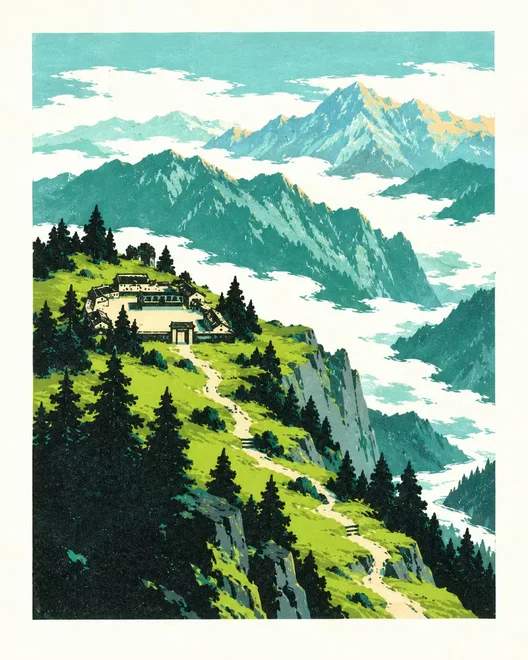
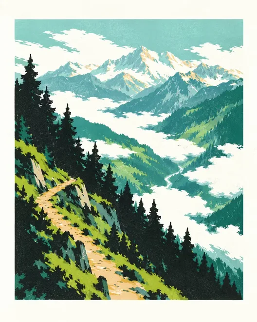
纸纹水粉
纸上旅行
为【主体】画一幅纸纹水粉旅行插画。采用【视角与场景】，用【配色与材质】划分受光面与硬边投影。保留少量纸纹，用人物、树木或道路标记距离，地标剪影应清晰可辨。
民间图像
农民画与印章
以【主体】为题，按【视角与场景】梳理轮廓与代表性图案。用【配色与材质】决定手刻印章的正负形，或农民画的平涂纹样和叙事动作。以主体清楚、局部细节简明为准。
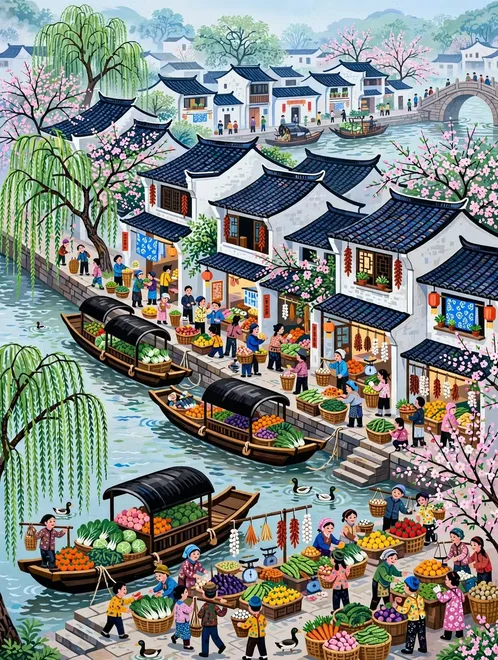
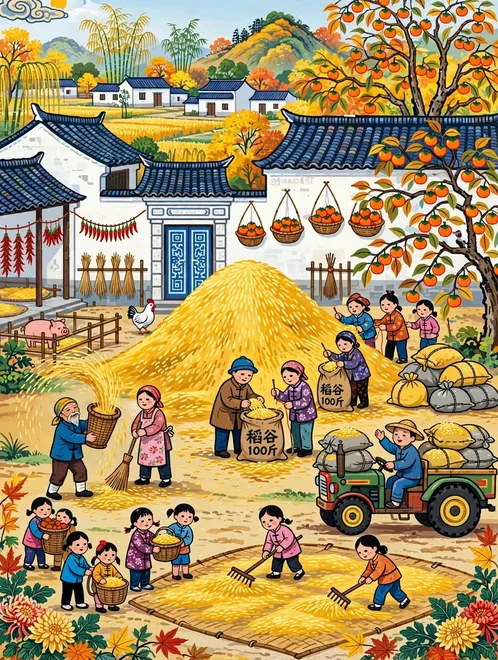
角色概念图
英雄联名概念
绘制【主体】的非官方联名角色概念图。按【视角与场景】安排完整姿态，保留基础角色的轮廓和动作语言，将联名辨识点融入【配色与材质】。统一光源、剪裁和透视，作品独立成图。
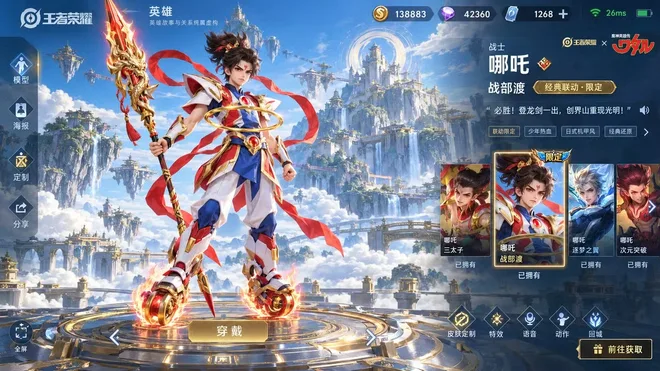
知识图解
知识漫画
把【主体】画成竖版知识漫画。用【视角与场景】呈现一个情境、一个机制和一个结果，按【配色与材质】区分变量与因果。先独立核实解释准确性，以最少文字配合清楚的画面顺序，必要时后期排字。
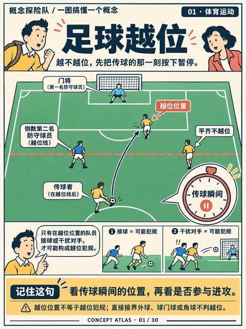
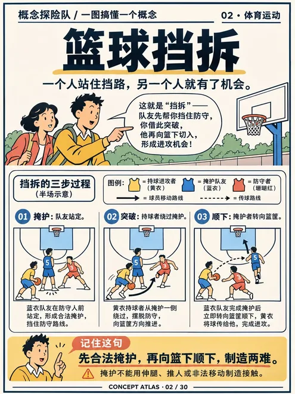
概念摄影
听见画面
以【主体】为线索构思一道华语乐队摄影谜题。用【视角与场景】让一到两个具体物件构成暗示，按【配色与材质】控制光线。保留歧义和画面完整性，线索靠可见事物成立。
收藏公仔
半透明玩具卫士
生成一只以【主体】为主题的收藏玩具卫士。用【视角与场景】交代全身和动作，采用【配色与材质】塑造硬挺制服、半透磨砂塑料甲壳与模压接缝。用有方向的边光强调厚薄和透光区别。
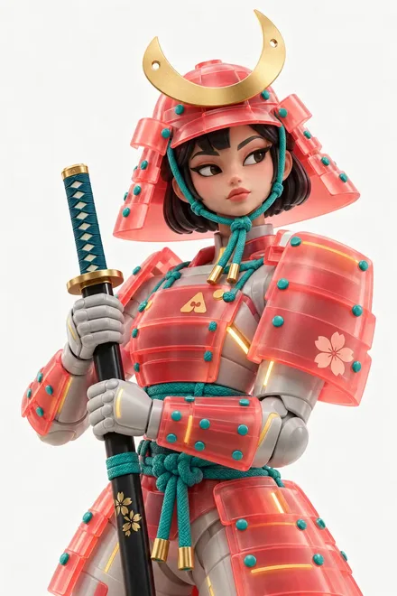
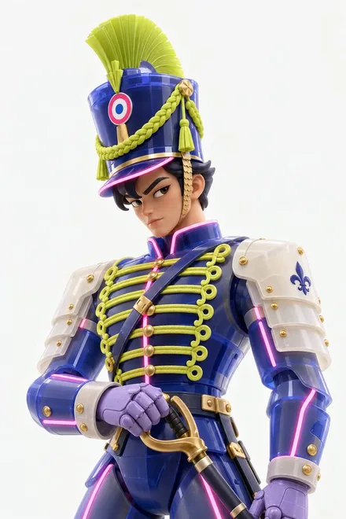
角色摄影
游戏真人化
把【主体】转译为可信的实拍场景。保持角色的服装结构与关键轮廓，使用【视角与场景】和【配色与材质】建立镜头距离、光向、织物与皮肤质感。场景配件服务于角色原有身份。
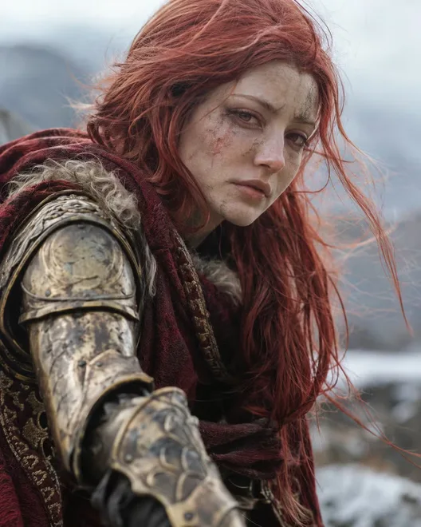
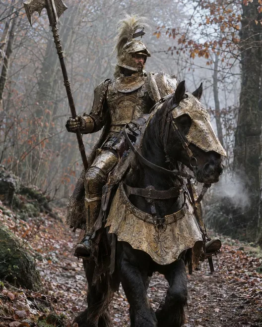
概念插画
创世纪变奏
围绕【主体】设计一幅指尖将触未触的概念画。借【视角与场景】安排两端主体与中部负空间，以【配色与材质】分开时代或媒介。让双方的姿态、距离和轮廓共同表达这场相遇。
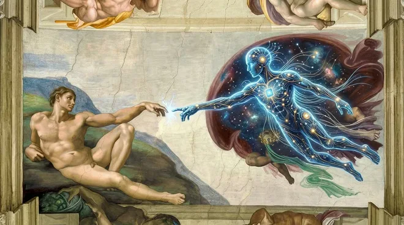
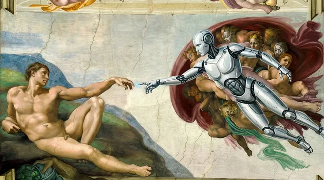
手刻橡皮章
橡胶戳艺术
把【主体】提炼成一枚手刻橡皮章。参考【视角与场景】保留最具识别度的轮廓与两到三个形状，用【配色与材质】确定印泥、纸纹和刀刻留白。轻微断点出现在边缘，细节服从整体剪影。
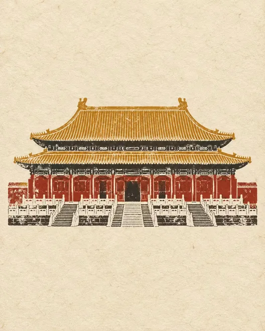
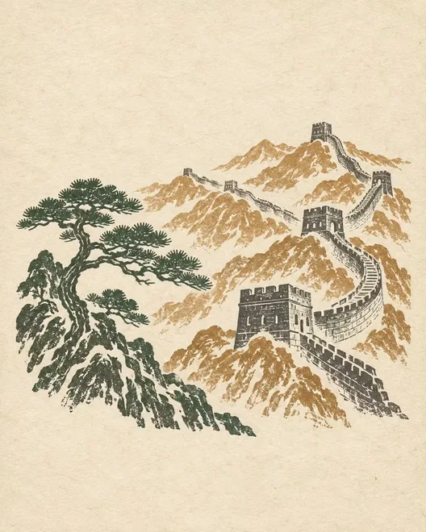
地标徽章
城市印记
以【主体】设计一枚城市徽章。用【视角与场景】抓住地标的招牌剪影，在规则六边形内按【配色与材质】安排边框、主形和小型环境符号。保持统一边距和可辨识的简化构造。
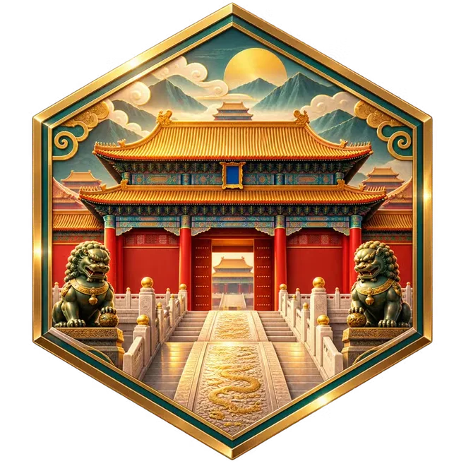
复古城市插画
City Pop 城市画册
把【主体】绘成一幅 City Pop 都市插画。固定【视角与场景】中的轮廓与空间关系，使用【配色与材质】区分天空、建筑与水面。用限定色块与印刷颗粒营造黄昏通透感。
静物与产品图
撕标签 · Wander
为【主体】制作去标签产品图或归类静物。选择【视角与场景】，以【配色与材质】表现瓶身、织物与纸质。保留包装物理结构，以统一阴影和视线组织画面，任何原标签区域保持干净。
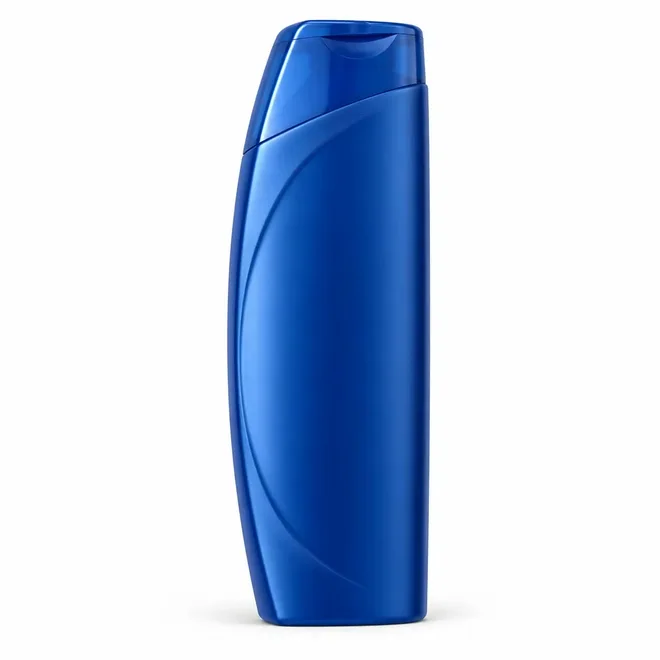
风格对照
画风图谱
以【主体】作为固定对照场景，记录【视角与场景】作为构图约束。只切换【配色与材质】描述中的画种、笔法、色层和边缘处理，使并排结果能清楚比较风格差异。
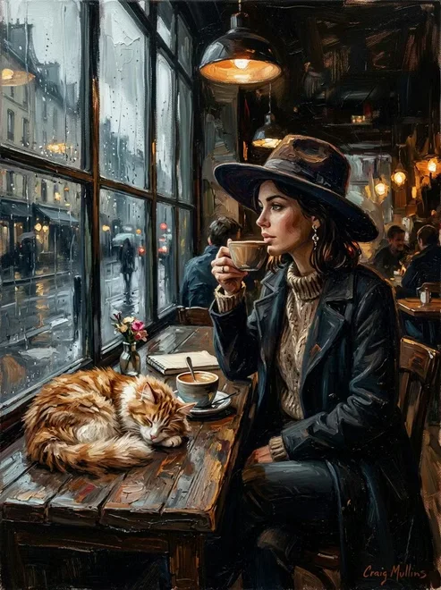
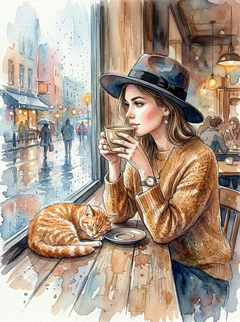
建筑剖透
上海穿墙图册
为【主体】创作建筑剖透图。选用【视角与场景】，按【配色与材质】区分外观、可核实内部与推断层。先记录平面和高度依据，使用图例说明推断；视觉结果可作为解读插图。
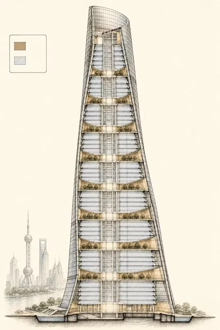
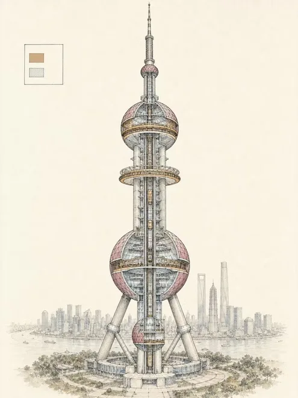
印刷工艺插图
印刷图鉴
用【主体】示范一种印刷工艺。按【视角与场景】保持跨版本构图可比，以【配色与材质】明确刀线、油墨、网点角度或版层关系。只展示实际能由该工艺产生的可见痕迹。
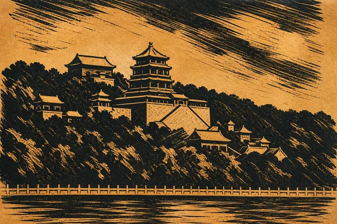
场景转译
游戏画风转译
把【主体】转译为一幅游戏实机风格的场景。遵循【视角与场景】中的机位和地标体量，按【配色与材质】重构颜色分级、材质、天气与光。把画风参考和原景结构分开校准。
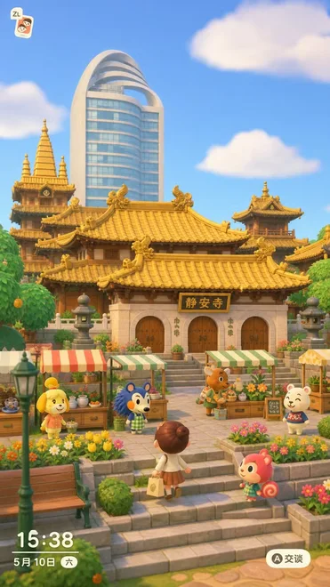
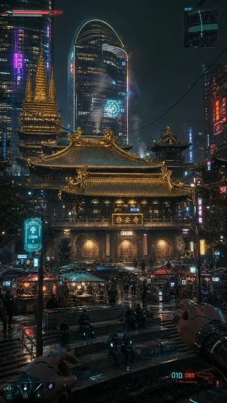
插画数字化
课本插画
为【主体】制作课本插画的整理或重绘样张。保留【视角与场景】中的叙事信息，使用【配色与材质】重建纸面或新的绘画质感。分开标注原扫描、修复和重绘，保持文章与图片的出处。
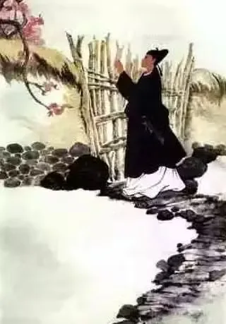
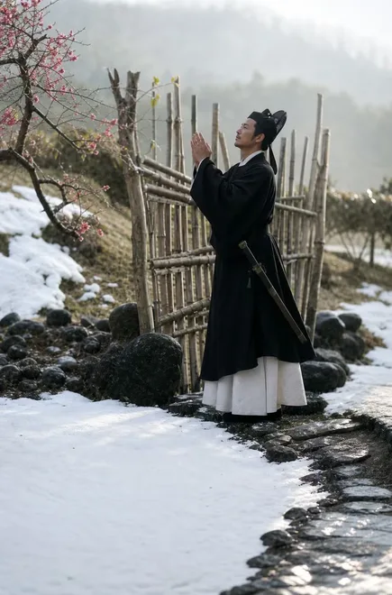
电影感摄影
导演与机车
用【主体】做一张机车主题电影剧照。采用【视角与场景】安排景别、道路和人物，使用【配色与材质】确定色温、阴影、颗粒和反光。镜头线索从画面出发，形成独立场景。
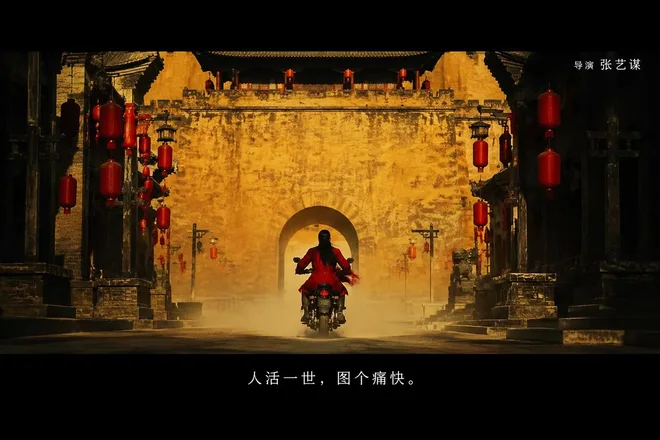
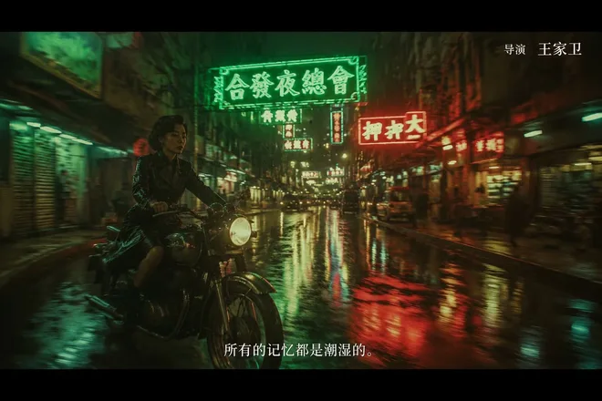
视觉实验
AI 图片画廊
围绕【主体】制作一张独立视觉实验图，用【视角与场景】约束主体数量、前后景与构图，以【配色与材质】统一视觉效果。记录输出比例和生成参数，便于复现。
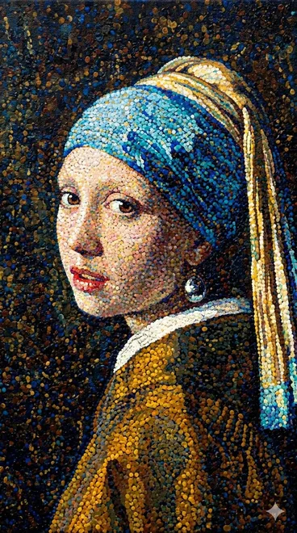
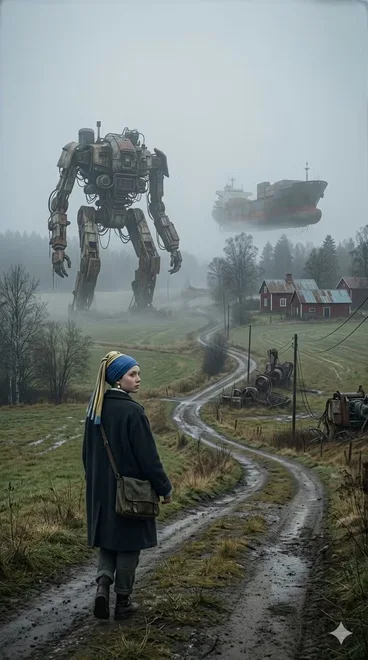
器物图录
文物数字图鉴
整理【主体】的器物图录展示。按【视角与场景】准确呈现器型、标志性纹饰与尺度，用【配色与材质】保持客观光线。记录收藏出处和年代依据，重绘时把生成图标注为示意。
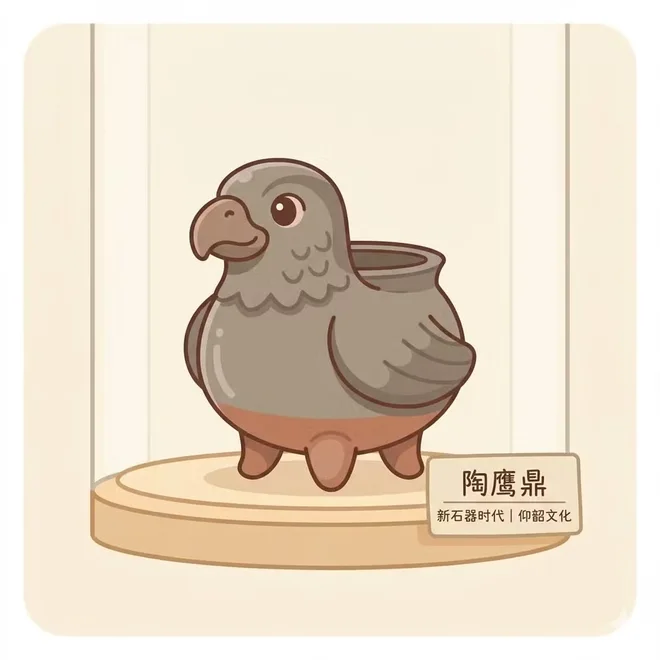
玉石浮雕
玉雕扑克牌
围绕【主体】设计一张玉石浮雕扑克牌。用【视角与场景】安排主纹样和牌面对称，以【配色与材质】区分玉石、阴刻、描金与黑漆。主纹样、牌角和边框保持明确间距。
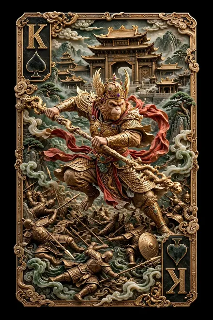
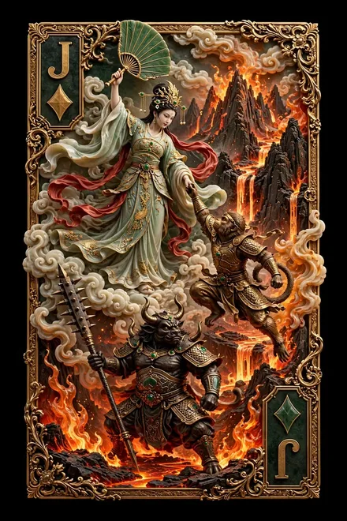